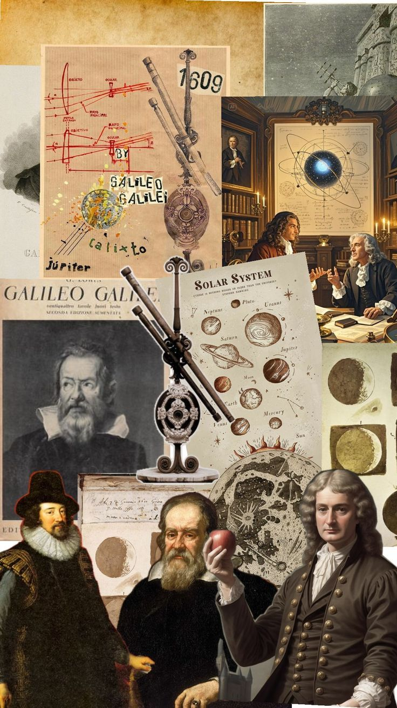
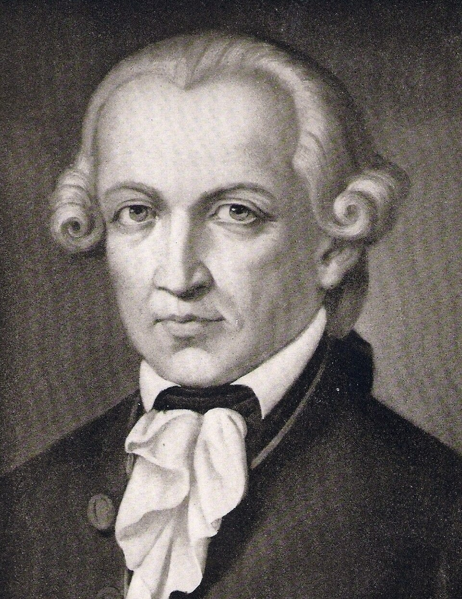

An age that put reason, evidence, and skepticism of inherited
authority at the center of philosophy — and in doing so, laid the
intellectual groundwork for modern science, democracy, and human
rights.
Introduction
The Enlightenment, often called the Age of Reason, was a broad
intellectual and cultural movement that developed across Europe and the
Atlantic world from the late 17th century through the 18th century.
Enlightenment thinkers placed increasing confidence in reason,
observation, criticism, and empirical inquiry as means of understanding
both nature and human society. Rather than simply accepting inherited
authority — whether religious, political, or philosophical — they asked
whether beliefs and institutions could justify themselves before the
tribunal of rational examination. The movement was not opposed to
religion in any single or uniform way, but it encouraged a powerful new
willingness to question dogma, tradition, and established forms of
authority.
The Enlightenment grew out of several earlier developments, especially
the Scientific Revolution, the religious conflicts of early modern
Europe, and the philosophical innovations of the 17th century. The
success of mathematical science suggested that nature might be governed
by regular and intelligible laws, while political and religious
conflicts raised difficult questions about toleration, authority, and
the foundations of social order. Philosophers increasingly asked whether
similar methods of critical inquiry could be applied beyond the physical
world to morality, politics, economics, education, and religion itself.
The result was not a single doctrine but an extraordinarily diverse
intellectual culture united by the aspiration to understand and improve
human life.
This page traces that transformation across three broad chapters: the
Continental rationalist tradition, which emphasized the power of reason
and sought secure foundations for knowledge; the British empiricist
tradition, which investigated the role of sensory experience and
questioned the limits of human understanding; and the political
philosophy through which Enlightenment ideas were applied to government,
rights, law, and political legitimacy. These traditions often disagreed
sharply with one another, but their disagreements themselves produced
some of the most important philosophical questions of the modern age.
The Enlightenment also extended far beyond the figures discussed here.
French philosophes such as
Voltaire,Denis Diderot, and Montesquieu
criticized intolerance and arbitrary authority; Scottish thinkers such
as Adam Smith and
David Hume investigated morality, society,
and political economy; and writers including
Mary Wollstonecraft expanded
debates about reason and rights into new arguments about women's
equality. By the end of the 18th century, Enlightenment ideas had become
deeply entangled with political revolutions and with the emerging
institutions of the modern world.
Timeline at a Glance
1637
Descartes publishes Discourse on Method, presenting a new
method of systematic philosophical inquiry.
1651
Hobbes publishes Leviathan, developing a powerful theory of
political authority and the social contract.
1689–1690
Locke publishes his major works on toleration, government, and human
understanding, shaping both empiricism and liberal political
thought.
1748
Hume publishes An Enquiry Concerning Human Understanding,
presenting influential arguments about causation, induction, and the
limits of reason.
1762
Rousseau publishes The Social Contract, arguing that
legitimate political authority must rest on a form of popular
sovereignty.
1781
Kant publishes Critique of Pure Reason, transforming modern
philosophy through his investigation of the conditions and limits of
human knowledge.
🏺 Before the Enlightenment: Europe After the Scientific Revolution

The achievements of Copernicus, Galileo, and Newton demonstrated that
careful observation and mathematical reasoning could overturn
centuries of inherited belief.
The Enlightenment did not emerge in a vacuum. It developed out of the
profound transformations of the Scientific Revolution, during which
thinkers such as Copernicus, Kepler, Galileo, and Isaac Newton
fundamentally changed European understandings of the natural world.
Older systems of explanation could no longer simply be accepted because
they carried the authority of Aristotle,
the Church, or ancient tradition; increasingly, claims about nature had
to confront observation, experiment, and mathematical demonstration. The
success of the new sciences created enormous confidence that the human
mind possessed powerful methods for discovering truths that had
previously remained hidden.
Newton'sPhilosophiæ Naturalis Principia Mathematica, published in 1687,
became an especially powerful symbol of this intellectual
transformation. Newton showed that the same mathematical principles
could explain both terrestrial motion and the movements of the heavens,
suggesting a universe governed by regular laws rather than arbitrary
intervention. Enlightenment thinkers did not simply copy Newton's
scientific method into every other field, but many were inspired by the
possibility that human society might also contain discoverable patterns
and principles. If reason could illuminate the workings of nature, they
asked, could it also clarify morality, law, politics, education, and the
proper organization of society?
These intellectual developments unfolded amid severe religious and
political conflict. The Protestant Reformation had fractured Western
Christianity, and the following centuries witnessed destructive wars
fought partly over religious allegiance and political authority. In
England, struggles between monarchy and Parliament culminated in civil
war, the execution of Charles I, the Commonwealth, and eventually the
constitutional settlement that followed the Glorious Revolution.
Philosophers confronting these conflicts could not easily assume that
inherited religious or political authority automatically guaranteed
peace, truth, or legitimacy.
The question of religious toleration therefore became increasingly
important. How could people with fundamentally different religious
convictions live within the same political community? Could political
authority legitimately control belief, or should certain areas of
conscience remain beyond the reach of government? At the same time,
expanding commerce, exploration, and contact with societies beyond
Europe complicated traditional assumptions about civilization, religion,
and human nature. The Enlightenment's criticism of inherited authority
was therefore connected not only with abstract philosophy but with major
changes in the practical world.
The intellectual culture that emerged from these circumstances was
remarkably diverse. Some philosophers hoped to establish knowledge upon
rational foundations as secure as mathematics, while others argued that
human understanding begins with experience and remains limited by it.
Some defended strong political authority as necessary for social peace,
while others developed theories of natural rights, constitutional
government, and popular sovereignty. The Enlightenment was united less
by agreement on every answer than by a shared willingness to subject
traditional answers to sustained criticism.
It was against this backdrop — a newly successful science, expanding
intellectual exchange, and a Europe deeply marked by religious and
political conflict — that modern philosophy began its search for new
foundations. One of the most influential starting points was the
rationalist project of René Descartes,
whose method of systematic doubt attempted to discover at least one
truth capable of surviving every possible challenge.
1️⃣ Rationalism
Descartes and the Search for Certain Knowledge
René Descartes, often called the father of modern philosophy, sought a
foundation for knowledge secure against all possible doubt.
René Descartes (1596–1650) is often
called the father of modern philosophy because he gave new importance to
the question of method: how should a thinker proceed if the goal is
genuine and reliable knowledge? Rather than beginning with the authority
of ancient writers or established religious and philosophical
traditions, Descartes attempted to examine beliefs critically and accept
only those that could withstand rigorous scrutiny. His project was not
merely destructive skepticism. Doubt was intended as a method for
discovering a foundation upon which secure knowledge could eventually be
rebuilt.
In the Meditations on First Philosophy, Descartes therefore
pushed doubt to extraordinary lengths. The senses sometimes deceive us,
he observed, and experiences in dreams can resemble experiences in
waking life. He even imagined the possibility of a powerful deceiver
capable of misleading him about matters that seemed completely obvious.
By constructing these skeptical possibilities, Descartes attempted to
identify something that could not be doubted even under the most extreme
conditions. The result was one of the most famous turning points in the
history of philosophy.
Descartes found certainty in the act of thinking itself. Even if every
belief about the external world were false, the fact that he was
doubting, questioning, or thinking could not itself be denied while the
act of thinking was taking place. This insight is expressed in the
famous formula cogito, ergo sum — "I think, therefore I am."
The cogito did not simply provide Descartes with a slogan; it
supplied the first secure point from which he hoped to reconstruct a
complete system of knowledge.
From this foundation, Descartes argued that certain ideas could be known
with special clarity and certainty through the intellect. Mathematics
provided an important model because mathematical reasoning appeared to
reach truths independently of the changing and sometimes deceptive
information provided by the senses. Descartes therefore emphasized
clear and distinct ideas and sought to establish a
rational connection between the thinking self, God, and the material
world. His system also produced the influential distinction between mind
and body: the mind as a thinking substance and matter as extended
substance, a problem that would shape debates about consciousness for
centuries.
The rationalist tradition was developed in very different directions by
Baruch Spinoza (1632–1677) and Gottfried Wilhelm Leibniz (1646–1716).
Spinoza constructed his Ethics according to a geometric method,
presenting definitions, axioms, and propositions in an attempt to
demonstrate the structure of reality with deductive rigor. He rejected
Descartes's strict separation of mind and body and instead developed a
monistic philosophy in which everything exists within a single infinite
substance, commonly identified in his terminology with God or Nature.
Leibniz, meanwhile, developed a highly
original metaphysics centered on monads, simple and
indivisible centers of force or perception that together constitute
reality. He argued that reality is intelligible because it is governed
by rational principles, including the principle that nothing happens
without a sufficient reason. Although Descartes, Spinoza, and Leibniz
disagreed profoundly about God, substance, freedom, and the nature of
reality, they shared a fundamental confidence in the capacity of reason
to reach beyond immediate experience. Their ambitious systems
established one side of the great modern debate over the origin and
limits of human knowledge.
2️⃣ Empiricism
Locke, Hume, and Knowledge Through Experience
John Locke rejected the idea of innate ideas, arguing instead that the
mind begins as a blank slate filled in through experience.
While Continental rationalists emphasized the power of reason to
discover fundamental truths, a powerful alternative tradition developed
in Britain: empiricism. Empiricists argued that
experience plays the central role in the formation of human knowledge
and that philosophy must carefully investigate what experience actually
provides. This approach did not deny the importance of reasoning, but it
challenged the claim that the mind possesses a large body of substantive
knowledge independently of experience. The crucial philosophical
question became: what can human beings legitimately know, and where do
the materials of that knowledge come from?
John Locke (1632–1704), in his
An Essay Concerning Human Understanding, famously attacked the
doctrine of innate ideas. Rather than assuming that the mind enters the
world already containing universal principles or concepts, Locke argued
that the materials of knowledge arise through
sensation and reflection. Sensation
provides ideas through our encounter with the external world, while
reflection concerns the mind's awareness of its own operations, such as
thinking, doubting, and remembering. The human mind therefore develops
through experience rather than beginning with a ready-made collection of
philosophical truths.
Locke's description of the mind as a tabula rasa, or blank
slate, became one of the most famous images associated with empiricism,
although his actual theory was more complex than the phrase alone
suggests. Simple ideas supplied through experience can be combined,
compared, and transformed into more complex ideas by the operations of
the mind. This approach encouraged philosophers to examine human
cognition itself rather than simply constructing vast metaphysical
systems about reality. Locke also stressed the limits of human
knowledge, asking not only what we know but what kinds of questions may
exceed our intellectual capacities.
George Berkeley (1685–1753) pushed
some empiricist assumptions in an unexpected direction. He argued that
our experience gives us access to ideas and perceptions, not to a
material substance existing behind them in the way philosophers commonly
imagined. His famous principle, esse est percipi — "to be is to
be perceived" — became associated with his philosophical idealism.
Berkeley's arguments forced philosophers to confront a difficult problem
that would remain central to modern epistemology: if knowledge begins
with experience, what exactly justifies our belief in a world existing
independently of our perceptions?
David Hume (1711–1776) carried empiricism
toward some of its most radical and unsettling conclusions. In his
An Enquiry Concerning Human Understanding, Hume argued that
human thought is ultimately grounded in experience, distinguishing vivid
impressions from the less forceful ideas that arise when we remember or
imagine those experiences. He then asked whether many of our most
fundamental beliefs could actually be justified by reason. His answer
often revealed a gap between what human beings naturally believe and
what philosophical argument can strictly demonstrate.
Hume's analysis of causation became particularly influential. When one
event follows another repeatedly, we become accustomed to expecting the
second event after the first. But, Hume argued, we do not literally
perceive a necessary causal power binding the two events together. We
observe constant conjunction and develop habits of expectation. This
leads to the problem of induction: no purely logical
argument can guarantee that patterns observed in the past will continue
unchanged in the future, even though science and ordinary life depend on
such expectations.
Hume extended this skeptical analysis to questions about the self,
religion, morality, and the powers of reason itself. He did not conclude
that human beings should stop believing or acting; rather, he emphasized
the role of custom, habit, sentiment, and practical life in sustaining
beliefs that abstract reason cannot fully prove. His philosophy
therefore represented both a culmination of British empiricism and a
profound challenge to the confidence of rationalist metaphysics.
Immanuel Kant later famously described Hume as having awakened him from
his "dogmatic slumber," prompting Kant to ask how knowledge of an
ordered and lawful world is possible at all.
3️⃣ Political Philosophy
Natural Rights, the Social Contract, and Reason Applied to Government
Rousseau's The Social Contract argued that legitimate political
authority rests on the consent of the governed.
Enlightenment philosophy transformed political thought by asking whether
political authority could be justified through reason rather than simply
inherited through tradition, conquest, or divine right. Philosophers
increasingly imagined a hypothetical state of nature
in which individuals existed before the establishment of organized
political society. The purpose of this thought experiment was not
necessarily to describe an actual historical period, but to ask what
political authority would require if it had to be justified from basic
facts about human beings and their interests.
Thomas Hobbes (1588–1679), writing
against the background of the English Civil War, offered one of the
earliest and most influential modern versions of social contract theory.
In Leviathan, Hobbes argued that individuals driven by
self-preservation and competing interests would face profound insecurity
without a common authority capable of enforcing peace. His famous
description of the state of nature as a condition of pervasive conflict
was intended to demonstrate why rational individuals would agree to
establish political authority. For Hobbes, peace and security required a
sovereign with sufficient power to prevent society from collapsing into
violent disorder.
John Locke developed a very different interpretation of the social
contract. Individuals, he argued, possess natural rights independently
of government, including rights connected with life, liberty, and
property. Political society is created not to grant these rights
arbitrarily but to protect them more effectively through known laws and
impartial institutions. Government therefore remains legitimate only so
long as it serves the purposes for which political authority was
entrusted to it. When rulers systematically violate fundamental rights,
Locke argued, political resistance can become justified.
Montesquieu (1689–1755) contributed
another major Enlightenment approach to political liberty through his
analysis of institutions and the distribution of power. In
The Spirit of the Laws, he argued that political systems should
be understood in relation to the conditions in which they operate, while
also emphasizing the dangers created when too much authority becomes
concentrated in one place. His influential theory of the separation of
powers helped shape later constitutional thought, encouraging the idea
that liberty can be protected not simply by choosing virtuous rulers but
by designing institutions capable of limiting and balancing political
power.
Jean-Jacques Rousseau
(1712–1778) reframed the social contract in yet another direction. In
The Social Contract (1762), he argued that legitimate political
authority cannot rest merely on the submission of individuals to a
ruler; it must be connected to the collective sovereignty of the people
themselves. His controversial concept of the
general will attempted to describe the common political
interest of citizens considered as members of a collective body, rather
than simply the sum of their private desires. Rousseau's ideas became
enormously influential in later democratic and revolutionary thought,
while also generating continuing debates about the relationship between
individual freedom and collective political authority.
Enlightenment political philosophy was also increasingly connected with
arguments about equality and the scope of human rights. The language of
liberty and universal reason could be used to challenge monarchy and
arbitrary privilege, but philosophers and reformers also began asking
why such principles were so often denied to women, enslaved people, and
other excluded groups. Mary Wollstonecraft's
A Vindication of the Rights of Woman (1792), for example,
argued that women should not be denied the education necessary for the
development of reason and moral independence. The tensions between
universal principles and the unequal societies that proclaimed them
became one of the Enlightenment's most important and enduring
contradictions.
Immanuel Kant (1724–1804) brought many
of the era's philosophical problems to a remarkable new level of
systematic analysis. In the Critique of Pure Reason, Kant
attempted to explain how objective knowledge of nature is possible while
accepting Hume's challenge that experience alone cannot reveal necessary
causal connections. Kant argued that the human mind is not merely a
passive receiver of sensations: it actively organizes experience through
forms and categories that make an ordered world of experience possible.
Knowledge therefore begins with experience, but, in Kant's famous
formulation, it does not follow that all knowledge arises from
experience alone.
Kant's moral philosophy offered an equally influential account of human
freedom and obligation. Rather than grounding morality primarily in
religious command, social custom, or the pursuit of personal happiness,
he argued that rational beings possess the capacity to legislate moral
principles for themselves. The Categorical Imperative
required individuals to test their actions against principles that could
coherently be willed as universal laws. Kant's philosophy thus brought
together the Enlightenment's concern with reason, freedom, and the
limits of knowledge while simultaneously marking the beginning of a new
phase in modern philosophy — one that would strongly influence German
Idealism, modern ethics, epistemology, and political thought.
4️⃣ Religion, Toleration & Criticism of Authority
Voltaire, Deism, and the Challenge to Religious Authority
Voltaire became one of the Enlightenment's most influential critics of
religious intolerance, superstition, and censorship.
One of the Enlightenment's most important battles concerned the place of
religion in human life and the authority claimed by religious
institutions. Enlightenment thinkers did not all reject religion, and it
is misleading to describe the movement simply as an attack on
Christianity or belief in God. What many of them opposed was religious
intolerance, persecution, fanaticism, censorship, and the idea that
inherited doctrine should be protected from rational criticism. They
asked whether religious beliefs could be examined by reason in the same
spirit of inquiry that scientists were applying to the natural world.
The result was not a single Enlightenment position on religion, but a
broad spectrum ranging from reform-minded Christianity and natural
religion to deism, skepticism, materialism, and atheism.
Deism became one of the most recognizable religious
positions associated with the Enlightenment. Deists generally accepted
that reason and observation of the natural world could support belief in
a supreme intelligence or creator, while questioning miracles, special
revelation, and the authority of particular religious institutions.
Nature itself appeared increasingly governed by regular and intelligible
laws, especially after the achievements of Newtonian science. For many
deists, this ordered universe suggested a rational creator, but one
whose existence and nature should be investigated through the natural
light of reason rather than accepted solely on the authority of
tradition. Deism therefore represented an attempt to reconcile belief in
God with the Enlightenment demand for rational justification.
François-Marie Arouet, better known as
Voltaire
(1694–1778), became the most famous public advocate of this critical
spirit. A writer, historian, satirist, and philosopher rather than the
creator of a single systematic philosophical system, Voltaire used his
enormous literary influence to attack superstition, religious
persecution, censorship, and arbitrary authority. He was particularly
hostile to the political and institutional power of the Catholic Church
in eighteenth-century France, but his central concern was broader: no
institution, religious or political, should be immune from criticism
simply because it claimed sacred or traditional authority.
Voltaire's defense of religious toleration was closely
connected to his skepticism about human certainty. If human beings are
capable of error, he argued in different forms throughout his writings,
then persecution in the name of absolute certainty becomes especially
dangerous. His Treatise on Tolerance (1763), written in the
context of the Calas affair, became one of the best-known Enlightenment
arguments against religious fanaticism and judicial injustice.
Toleration did not mean that every belief had to be considered equally
true; rather, it meant that disagreement itself could not justify
cruelty, persecution, or the suppression of conscience.
The Enlightenment critique of authority extended beyond religion.
Thinkers increasingly challenged the assumption that kings ruled by
divine right, that aristocratic privilege was naturally justified, or
that ancient customs deserved obedience simply because they were old.
The critical question became:
what reasons can actually justify this authority? This
change in attitude was philosophically profound. It shifted political
and religious discussion away from mere appeals to tradition and toward
arguments about evidence, natural rights, consent, utility, liberty, and
human welfare.
Yet the Enlightenment's relationship with religion remained complex.
Locke defended toleration while maintaining important limits to it;
Rousseau developed his own conception of civil religion; Hume subjected
natural religion itself to skeptical criticism; and Kant later attempted
to understand religion within the limits set by practical reason. The
period was therefore not defined by a simple transition from faith to
unbelief. Its deeper transformation was the insistence that religious
and political claims could be publicly questioned, discussed, and
evaluated rather than accepted solely because an established authority
declared them to be true.
5️⃣ The French Enlightenment & the Encyclopédie
Diderot, d'Alembert, and the Project of Spreading Knowledge
The Enlightenment was not only a collection of philosophical theories;
it was also a new intellectual culture. During the eighteenth century,
ideas increasingly circulated through books, pamphlets, journals,
salons, coffeehouses, learned societies, and an expanding world of
print. In France, writers and intellectuals later known as the
philosophes became especially important in bringing
philosophical criticism into public life. They wrote not only about
metaphysics and epistemology, but also about education, law, economics,
science, religion, political institutions, and the organization of
society itself.
One of the greatest expressions of this ambition was the
Encyclopédie, edited principally by Denis Diderot (1713–1784) and Jean le Rond
d'Alembert (1717–1783). Published over many years in the eighteenth
century, the project sought to gather and organize the knowledge of its
age while making that knowledge more widely available. It included
discussions not only of philosophy and science but also of practical
crafts and technologies. This was itself a philosophical statement:
human knowledge was not confined to ancient authorities, religious
institutions, or abstract speculation, but was continually expanded
through investigation, experience, skill, and collective intellectual
effort.
Diderot's project reflected a central Enlightenment confidence that
knowledge could contribute to human improvement. If ignorance and
prejudice helped preserve unjust institutions, then education and open
inquiry could potentially weaken their power. The Encyclopédie
therefore became more than a reference work. Its organization of
knowledge implicitly challenged older intellectual hierarchies and
encouraged readers to see the arts, sciences, and practical disciplines
as parts of a connected human enterprise. Knowledge was something to be
investigated, criticized, revised, and shared rather than simply
inherited from the past.
The project also revealed the political dangers of free inquiry in
eighteenth-century Europe. The Encyclopédie faced censorship
and official opposition because its contributors often questioned
established religious, political, and intellectual authorities. The
conflict surrounding its publication demonstrated that ideas were not
isolated from power. To ask who may publish, who may teach, and who may
criticize established institutions was already to raise political
questions about liberty and authority. The Enlightenment thus helped
create a more visible public sphere in which arguments
could circulate beyond the traditional boundaries of church, court, and
university.
The French Enlightenment was also intellectually diverse. Montesquieu
investigated political institutions and argued that different forms of
government required different arrangements of power. Voltaire attacked
intolerance and superstition through satire and public campaigns.
Diderot explored materialism, aesthetics, and the nature of human
beings. Rousseau, meanwhile, became one of the movement's most difficult
and critical voices, questioning whether the growth of civilization and
the arts necessarily produced moral improvement. The Enlightenment was
therefore never a single doctrine shared by every thinker who belonged
to it.
What united many of these thinkers was less a common set of answers than
a common willingness to make existing institutions answerable to
criticism. Education, publication, scientific investigation, and public
debate became instruments through which society itself could be
examined. The ambition to collect and circulate knowledge would have a
lasting influence on modern education, journalism, libraries,
universities, and democratic political culture. The Enlightenment
increasingly imagined knowledge not as the possession of a small
inherited elite, but as a resource whose wider circulation could
transform society.
6️⃣ Kant and the Critical Philosophy
What Can Reason Know?

Immanuel Kant transformed modern philosophy by investigating both the
powers and the limits of human reason.
Immanuel Kant (1724–1804) stands at the
culmination of many of the Enlightenment's greatest philosophical
debates. By the late eighteenth century, the conflict between
rationalism and empiricism had produced a difficult problem.
Rationalists had argued that reason could discover fundamental truths
independently of experience, while empiricists had insisted that
knowledge must ultimately begin with sensory experience. David Hume's
skeptical analysis of causation and induction made the problem
especially urgent: if experience alone cannot justify many of our
deepest assumptions about the world, then what makes scientific
knowledge possible?
Kant's answer began with a revolutionary distinction. He agreed with the
empiricists that human knowledge begins with experience, but he denied
that all knowledge is simply produced by experience. The mind is not a
completely passive container receiving impressions from the outside
world. Instead, Kant argued, the human mind actively organizes
experience through fundamental forms and concepts. Space and time
structure how things appear to us, while categories such as causality
help make coherent experience possible. In this sense, the mind
contributes to the structure of the world as it is experienced.
This position allowed Kant to explain why science can discover necessary
and universal patterns without returning to the older rationalist belief
that human reason can directly know reality exactly as it exists
independently of all experience. Kant drew a famous distinction between
phenomena, the world as it appears within the
conditions of human experience, and the noumenal realm,
or things considered independently of those conditions. Human knowledge,
he argued, has limits: reason cannot simply move beyond possible
experience and claim theoretical knowledge of the soul, the universe as
a complete whole, or God.
The
Critique of Pure Reason, first published in 1781, was therefore not an attack on reason but a
critical investigation of reason itself. Kant wanted to determine what
reason can legitimately know and where it produces illusion by
attempting to go beyond its proper limits. This was one of the
Enlightenment's most mature philosophical developments. Earlier thinkers
had often asked whether reason or experience should provide the ultimate
foundation of knowledge; Kant asked a deeper question about the
conditions that make knowledge possible in the first place.
Kant also gave one of the most famous definitions of Enlightenment in
his 1784 essay
An Answer to the Question: What Is Enlightenment?
He described Enlightenment as humanity's emergence from
self-incurred immaturity—the failure to use one's own
understanding without relying blindly on the guidance of others. His
motto, Sapere aude, or "dare to know," expressed the
Enlightenment ideal of intellectual independence. To be enlightened was
not merely to possess more information; it was to develop the courage
and discipline to think critically rather than allowing priests, rulers,
books, or social customs to think entirely on one's behalf.
In moral philosophy, Kant likewise attempted to ground ethics in human
reason. His Categorical Imperative asked individuals to
act only according to principles that they could rationally will to
become universal laws. Moral action, on this view, cannot rest merely on
personal advantage, social custom, or fear of punishment. Kant's
emphasis on autonomy—the capacity of rational beings to give themselves
moral law—became one of the most influential ideas in modern ethical and
political philosophy. The dignity of persons was connected to their
status as rational agents who must never be treated merely as tools for
someone else's purposes.
Kant thus transformed the Enlightenment from a simple celebration of
unlimited reason into a more critical project. Reason was immensely
powerful, but it was not omnipotent; experience was indispensable, but
the mind also contributed essential structures to experience. This
synthesis opened an entirely new stage in philosophy and profoundly
influenced German Idealism, nineteenth-century philosophy, modern
epistemology, ethics, and political thought. In many ways, Kant marked
both the culmination of the Enlightenment and the beginning of the
philosophical movements that would eventually move beyond it.
7️⃣ Revolutions, Legacy & the Limits of Enlightenment
From Enlightenment Ideas to the Modern World
By the late eighteenth century, Enlightenment philosophy had moved far
beyond books and universities into the political imagination of Europe
and the Atlantic world. Ideas about natural rights, government by
consent, constitutional limits on power, freedom of expression, and the
legitimacy of resistance against tyranny became part of major political
debates. Enlightenment thinkers did not directly create every revolution
associated with their age, and revolutionary movements drew upon many
additional religious, economic, and political traditions. Nevertheless,
the language through which modern people discussed liberty, equality,
citizenship, and legitimate authority was profoundly shaped by
Enlightenment philosophy.
The American Revolution drew particularly strongly upon
the tradition of natural rights and limited government associated with
thinkers such as John Locke. The belief that political authority must be
justified by the consent of the governed challenged the older doctrine
that rulers possessed an unquestionable divine right to rule. Written
constitutions and declarations of rights increasingly presented
government as something that could be deliberately designed, criticized,
and changed. Political order was no longer understood only as an
inheritance from the past; it could become an object of rational
reflection and institutional reform.
The French Revolution revealed both the extraordinary
power and the dangerous complexity of Enlightenment political ideals.
Revolutionary language invoked liberty, equality, citizenship, and the
sovereignty of the people, while the destruction of the old regime
appeared to many contemporaries as a dramatic realization of the demand
to challenge inherited privilege. Yet the Revolution also descended into
political violence and repression. The events forced later thinkers to
confront a difficult question: can reason and ideals of liberation
guarantee political freedom, or can movements claiming to represent
universal truth themselves become new forms of coercive authority?
The Enlightenment's legacy also extended into science, education, law,
economics, and modern democratic culture. Its confidence in systematic
inquiry helped strengthen the ideal that beliefs should be supported by
evidence and argument. Its criticism of censorship contributed to later
defenses of intellectual and political freedom. Its discussions of
natural rights helped shape modern ideas of human dignity and equality
before the law. Even today, debates about secular government, scientific
evidence, free speech, religious liberty, and the proper limits of state
power continue to use questions first developed with particular force
during the Enlightenment.
At the same time, modern historians and philosophers have increasingly
examined the Enlightenment's
contradictions and limitations. The movement's language
of universal human equality existed alongside societies deeply involved
in colonialism, imperial expansion, racial hierarchy, and slavery. Many
Enlightenment thinkers defended broader liberty while excluding women,
enslaved people, colonized populations, or those without political
property from full participation in public life. Some philosophers also
produced theories of human difference that later contributed to racial
classification and hierarchy. The universal ideals of the Enlightenment
were therefore often applied unevenly and sometimes contradicted by the
societies that celebrated them.
Another limitation concerned the Enlightenment's faith in progress and
reason. Critics in the Romantic movement and later philosophical
traditions argued that human beings cannot be understood through reason
alone. Emotion, imagination, tradition, culture, history, and
unconscious forces also shape human life. The nineteenth and twentieth
centuries, marked by industrial exploitation, nationalism,
totalitarianism, and world wars, further challenged the assumption that
scientific and technological progress necessarily produces moral
progress. Knowledge can increase, later thinkers observed, while
injustice and violence remain possible.
Yet these criticisms do not simply make the Enlightenment irrelevant. In
many cases, they continue its own practice of critical self-examination
by asking whether supposedly universal principles have actually been
applied universally. The Enlightenment's most enduring legacy may
therefore be neither a fixed set of doctrines nor an unquestioning faith
in reason. It is the continuing demand that beliefs and institutions be
open to criticism, that authority provide justification for its claims,
and that human beings retain the freedom to investigate, argue, revise,
and think for themselves. The modern world remains deeply shaped by this
unfinished Enlightenment project.
👤 Major Thinkers
The key figures behind each chapter of this era, in brief.
🧠 Cogito, Ergo Sum — Descartes' attempt to establish
an indubitable foundation for knowledge in the certainty of the
thinking self
📄 Tabula Rasa — Locke's rejection of innate ideas
and his account of the mind's knowledge as developing through
experience and reflection
🔗 The Problem of Induction — Hume's challenge to our
rational justification for expecting the future to resemble the past
🤝 The Social Contract — the attempt to explain
legitimate political authority through agreement, consent, or the
collective will of a political community
⚖ Natural Rights — the idea that individuals possess
fundamental rights that do not simply originate from the government
that governs them
🕊 Religious Toleration — the argument that religious
disagreement cannot justify persecution, censorship, or the coercion
of individual conscience
📚 The Encyclopédie & the Spread of Knowledge —
the Enlightenment ambition to collect, organize, criticize, and make
human knowledge more widely available
🔍 Critical Reason — Kant's investigation into both
the powers and limits of human reason, asking what conditions make
knowledge possible
🧭 The Categorical Imperative — Kant's attempt to
ground moral duty in principles that rational beings could will to
become universal laws
🌟 Sapere Aude — "dare to know," Kant's expression of
the Enlightenment ideal of intellectual independence and the courage
to use one's own understanding
🌍 Influence on Later Philosophy
The Enlightenment transformed the fundamental questions of modern
philosophy. Descartes' search for certainty helped establish
epistemology as a central concern of modern thought, while the conflict
between rationalism and empiricism forced philosophers to ask whether
knowledge originates primarily in reason, experience, or some
combination of both. Kant's response to this debate opened directly into
German Idealism and influenced thinkers such as Fichte, Schelling, and
Hegel. At the same time, Hume's skepticism continued to shape
empiricism, philosophy of science, and later analytic philosophy,
particularly in debates about causation, induction, and the limits of
human knowledge.
Enlightenment political philosophy also profoundly changed how
legitimate government was understood. Theories of natural rights,
government by consent, constitutional limits on power, religious
toleration, and popular sovereignty helped shape modern democratic and
republican traditions. Enlightenment ideas influenced the political
language surrounding the American and French Revolutions, although those
historical events cannot be reduced to philosophy alone. The principle
that political authority must provide reasons for its existence, rather
than merely appeal to divine right or inherited custom, remains one of
the defining assumptions of modern political thought.
The Enlightenment's defense of open inquiry and the wider circulation of
knowledge also contributed to the development of modern intellectual
culture. Scientific institutions, universities, libraries, publishing,
journalism, and public debate increasingly operated according to the
ideal that claims should be exposed to criticism and supported by
evidence or argument. The Encyclopédie symbolized this ambition
to organize knowledge without treating inherited authority as beyond
examination. The Enlightenment therefore helped establish the modern
expectation that knowledge is not simply received from tradition but
continually tested, revised, and expanded.
Kant's moral and political philosophy gave the Enlightenment another
enduring legacy: the concept of human autonomy and dignity. His argument
that rational persons should never be treated merely as instruments for
someone else's purposes became deeply influential in later ethical
theory and debates about human rights. His emphasis on intellectual
independence also gave philosophical expression to one of the era's
deepest aspirations: that individuals should develop the capacity to
think for themselves rather than surrendering judgment entirely to
religious, political, or social authorities.
Yet the Enlightenment's legacy remains deeply contested. Later
movements, including Romanticism, Marxism, existentialism,
postmodernism, and postcolonial thought, challenged different aspects of
its confidence in universal reason, progress, and supposedly objective
standards. Historians have also emphasized the contradiction between
Enlightenment language about universal liberty and equality and the
realities of colonialism, slavery, imperial expansion, racial hierarchy,
and the exclusion of women from many forms of political participation.
These criticisms have not ended the Enlightenment debate; instead, they
have raised a continuing question about whether its universal ideals can
be made more genuinely universal.
For this reason, the Enlightenment remains more than a historical
period. Its central disputes continue in contemporary philosophy and
public life: What are the limits of reason? What counts as evidence?
When is authority legitimate? How should individuals balance freedom
with social obligation? Can moral principles be universal? And does
intellectual progress produce moral progress? Modern philosophy
continues to wrestle with these questions, often by extending, revising,
or directly criticizing the intellectual foundations laid during the Age
of Enlightenment.
📊 Quick Facts
Time Period: c. late 17th century – early 19th
century, with its intellectual peak in the 18th century
Key Regions: France, Britain, the Dutch Republic, the
German-speaking states, and the wider Atlantic world
Major Movements: Rationalism, Empiricism, Deism,
Enlightenment Humanism, Social Contract Theory, and Kantian Critical
Philosophy
Central Questions: What can human reason know? Where
does knowledge come from? What makes political authority legitimate?
How should individuals think and act freely?
Defining Ideal: Critical inquiry — the belief that
knowledge, institutions, and authority should be open to rational
examination and criticism
Successor Traditions: German Idealism, Romanticism,
Utilitarianism, Liberalism, modern democratic theory, philosophy of
science, and later critiques of reason and universalism
The Enlightenment's confidence in reason would soon face serious
challenges of its own — from Romantic reactions against cold
rationalism, from Hegel's sweeping historical dialectics, and from
thinkers who began asking whether reason alone could ever fully account
for human experience, meaning, or the sheer messiness of existence.